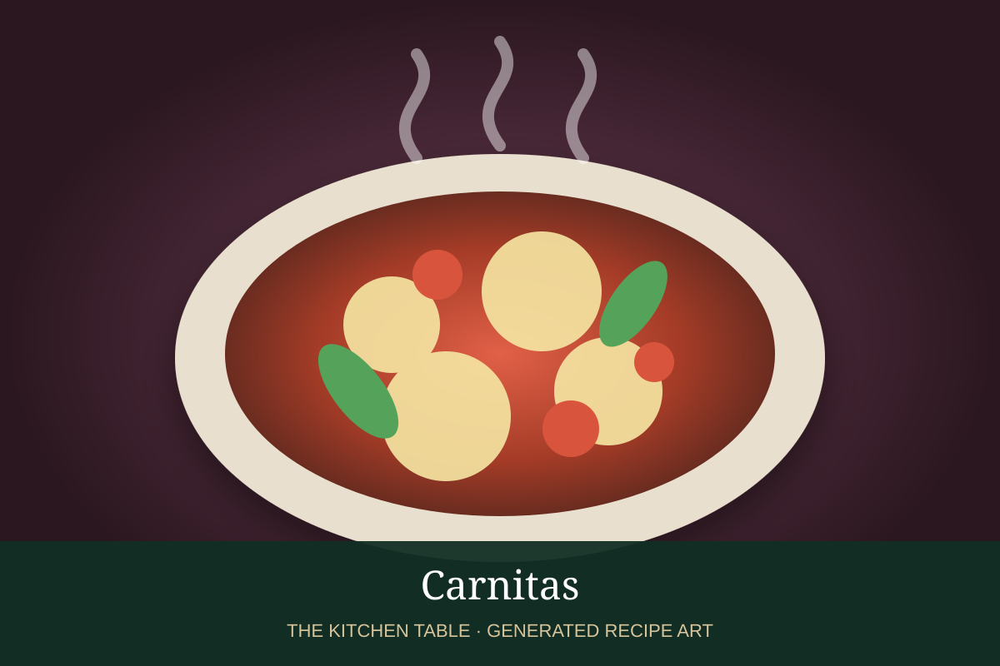

← Back to all recipes
PORK · MEXICAN
Carnitas
Michocán-style pork slowly cooked until tender, then crisped at the edges and served with tortillas, onion, cilantro, and salsa.
3 hrServes 8

Photo: Mexico Insider
Ingredients
- 4 lb pork shoulder, cut into large chunks
- 2 tsp kosher salt
- 1 tsp black pepper
- 1 cup lard or neutral oil
- 1 orange, halved
- 1 onion, quartered
- 4 garlic cloves
- 1 tsp oregano
- 1/2 tsp cumin
- 1 cup water or stock
- Corn tortillas
- Chopped onion, cilantro, lime, and salsa
Preparation
- Season pork with salt and pepper.
- Add pork, lard or oil, orange, onion, garlic, oregano, cumin, and water to a heavy pot.
- Cook covered over very low heat or in a 300°F oven until pork is very tender, about 2 1/2 hours.
- Uncover and let liquid reduce.
- Shred into large pieces and crisp under the broiler or in a skillet.
- Serve with tortillas, onion, cilantro, lime, and salsa.